VelServe：以实测延迟尾部校准解码调度
论文：VelServe: Taming Decode Jitters in LLM Inference with Tail-Calibrated Scheduling
作者：Ishaan Datta、Alind Khare、Koushik Kumar Dey、Ratnesh Jamidar、Anand Kumar Singh。第一作者机构为 Sprinklr，合作机构包括 Microsoft。
论文链接：arXiv:2611.18392；首次提交为北京时间2026年11月14日00:34，记录日期2026年11月16日。论文表示将发布调度器、基线、客户端、配置和运行数据；本次没有核验到独立可访问的作者代码入口，未独立复现实验。
VelServe研究流式大模型服务中一类容易被平均速度掩盖的问题：一个很慢的解码迭代会让同批所有请求同时迟到，长回答又会连续经过数百次迭代。它通过线上尾部余量、最短剩余提示优先，以及预填充解码分离时的同步接纳门控，控制这些停顿的长度或出现频率。
现有调度器按预测延迟把每步预填充预算填到时限边缘，几乎没有余量吸收预测误差或主机停顿；而长回答会经历数百个步骤，单步罕见的超时因此累积为普遍的请求级尾延迟。即使将预填充与解码分离，新请求加入解码实例的步骤仍可能使整批流同时停顿。
1. 背景和问题
1.1 从平均生成速度到每个请求的长间隔
交互式推理有两个不同的时间目标。首token时间包含排队、预填充和首个输出的传输；连续token之间的间隔决定用户是否感觉生成中断。一个回答的大部分步骤很快，并不能抵消中间一次近一秒的空白。文本阅读可以靠缓冲掩盖少量间隔，语音合成、下游流水线和工具型Agent却可能被每次停顿直接阻塞。论文因此从一个请求内部的间隔分布出发，而不是只计算总生成时间除以输出长度，也不是把所有用户的token混在一起取分位数。前者会将长停顿稀释在许多短步骤中，后者会让大量平稳短请求掩盖少数持续卡顿的长请求。
其联合服务目标可写为：
符号解释：请求为$r$，提示长度为$P_r$，$t_{\mathrm{solo}}$是空闲引擎单独预填充该提示所需时间；$S_{F0}=1$秒是首token最低宽限，主实验$\kappa=3$，$S_D=150$毫秒。$Q_{0.99}$对每个请求自己的token间隔取分位数。只有两项同时满足，请求才算达标。论文的SLO goodput是联合达标比例至少90%时可持续的最高到达请求率。这里的90%与后面校准器使用的99%目标不同，不能把两个百分数当作同一验收标准。
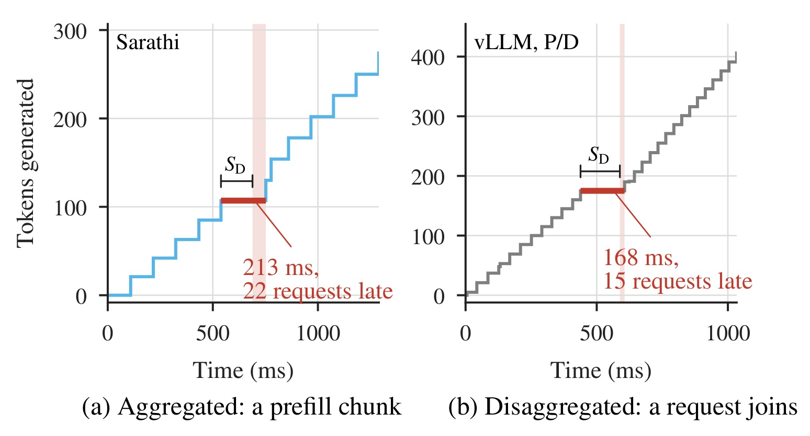
Figure 1的横轴是经过时间，纵轴是批次累计生成token，阶梯的每一级对应一次共同解码迭代。左侧Sarathi虽然用分块预填充限制单步工作量，仍有一次213毫秒迭代让22个请求同时得到迟到token；右侧预填充解码分离的vLLM在新请求加入时出现168毫秒步骤，15个请求一起等待。红色水平段表示超过目标的停顿，淡红区域强调超出时限的部分。图中比较的不是两个系统的总体吞吐，而是说明两种部署都存在同步放大的单步事件：聚合时预填充块与解码争用，分离时接纳操作仍进入解码执行节奏。两张图来自DeepSeek-V4-Flash的Mooncake回放，因此不能将这两个具体时长理解为所有硬件和模型的固定接纳成本。它们为后续方法限定了不同控制对象：前者尝试缩短含预填充的迭代，后者需要减少每个流经历慢接纳的次数。一次迭代让多个流共同迟到，与单个请求偶尔网络抖动不同，定位时需要把请求时间戳回连到批次成员和执行步骤。
1.2 队列顺序与迭代预算是两个控制维度
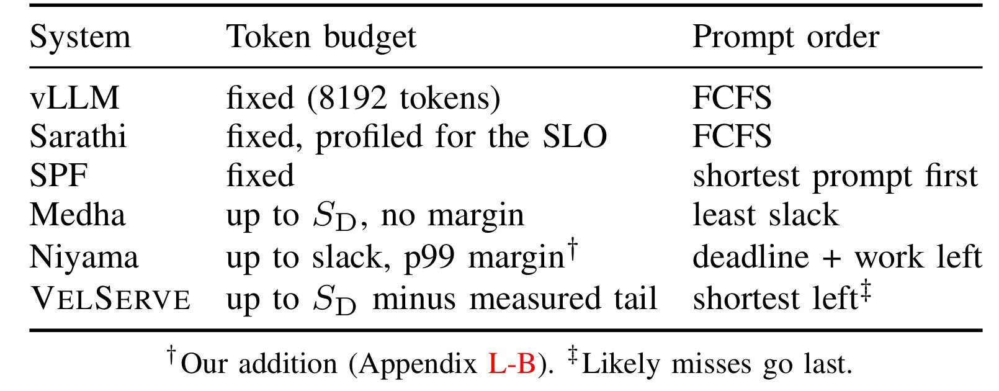
Table I把六个系统放在相同的两列控制变量中。vLLM使用固定8192token预算并按到达顺序服务，Sarathi将固定预算离线调到适合时限，SPF只把提示顺序改为短任务优先。Medha按预测迭代时间填到解码时限，以相对剩余宽限组织提示；Niyama按累计截止时间的宽限选择工作。VelServe的区别在于从解码时限中扣除实测尾部余量，再按剩余工作量排提示，预计必然超时的请求移到后面。表中Niyama的百分位余量带有脚注，明确是本文复现额外加入的机制，不能当作原方法天然拥有的配置。这个分解也解释了为什么不能只比较“是否短任务优先”：顺序能缓解短提示排在长提示后的等待，却无法让已经规划得过满的一次GPU迭代更快完成；反过来，缩小固定预算虽保护连续输出，可能使长预填充分成更多轮，延长后面短请求的首token等待。两条路径必须联动评估，且对照需要同引擎、同硬件和相同服务目标。
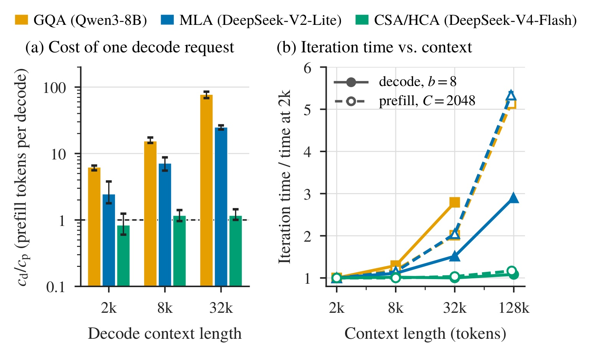
Figure 2左侧以预填充token为单位计量单个解码请求的成本，横轴是解码上下文长度；右侧将迭代时间对两千token上下文归一化，分别观察固定解码批量和预填充块。GQA和MLA随历史变长明显变贵，而DeepSeek-V4-Flash的压缩注意力在测量范围内变化较小。这说明同样的一千token预算不总是对应同样的毫秒数，也解释了为什么仅按剩余token排队在不同架构上可能不准确。图中的“压缩注意力解码约等于一个预填充token”是量级直觉，后面的在线校准实际发现其解码权重仍经常大于一，因而使用加权预算。右图中不同模型的归一化曲线不是绝对延迟排名，不能以较平坦曲线断言该完整模型在同一设备上运行更快。作者单卡测量V4只使用四路专家并行的一份专家切片，注意力成本和每卡专家流量可用于系统分析，但生成文本不代表完整模型能力。实际应用需要先确认自己的上下文成本是否足够平坦，再决定控制器能否用简单计数代替时间预测。
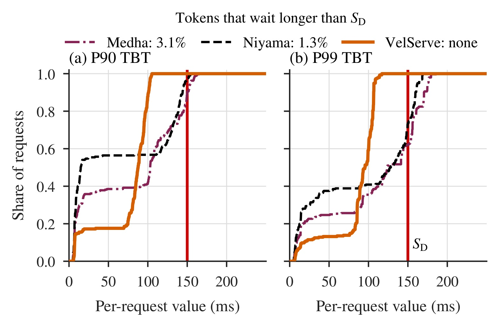
Figure 3左右两面板分别统计每个请求的P90与P99间隔，再对这些请求级数值绘制累计分布，红线是150毫秒目标。Medha与Niyama只有少量token遇到晚间隔，图例给出的比例分别是3.1%和1.3%，所以在左图大多数请求看似合格；当同一批请求改用P99检查，右图明显更多分布落到目标右侧。VelServe曲线仍在目标内，说明保护的恰是少量但影响广泛的慢步骤。该例来自DeepSeek-V2-Lite、Mixed负载和每秒1.25请求，不能由这一张曲线推断所有请求长度上的最坏情况保证。图中纵轴是请求份额，顶部图例却是token份额，两种分母必须区分。这里最有用的诊断方法是保留每个请求的原始间隔序列，让聚合口径可重算；如果只存一个平均TPOT，就无法事后发现一个长回答反复遇到迟到步骤，更无法判断这些迟到是否由同一个批次停顿共同触发。同样的原始时间戳能够同时生成两个面板，所以口径变化本身已经足以改变结论，不能将差异误判为两次实验负载不同。
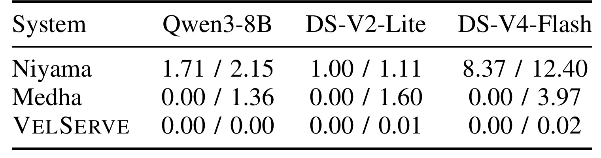
Table II每个单元格斜线前后分别是计划和实测超过解码时限的迭代百分比，三列是三种注意力模型。Medha三列规划值都为零，但实测仍有1.36%、1.60%和3.97%的超时，直接揭示把预算填到预测边界的风险。Niyama甚至计划了部分慢迭代，V4列达到8.37%，原因是累计token截止时间允许前面跑得快的流积攒宽限，之后再用一个很慢的步骤花掉它。VelServe实测在对应设置中降到0%、0.01%和0.02%，表明控制余量确实改变了迭代尾部，而不仅仅重新排列请求。这里零值受显示精度与有限运行长度限制，不是严格零概率承诺。三个模型列也不能脱离上下文分布横比基线好坏，因为预测残差、每次批量以及上下文成本都不同。表格作为问题证据，支持将“计划允许的停顿”和“误差导致的停顿”分开记录；只有前者被设计消除后，后者的统计校准才可能真正保护每步间隔。是否“计划超时”可以从预算与预测日志直接复核，是否“实际超时”则需要GPU和交付时间记录，两套证据缺一不可。
2. 方法
2.1 迭代成本与尾部校准
VelServe不修改模型权重，而是在vLLM V1调度器层安排每轮工作。它为每个正在解码的请求保留一个token，再选择能放入该轮的提示块。快速规划器每轮运行，慢速校准器在后台每500轮更新。迭代时间模型明确区分常量开销、预填充、解码、上下文相关项，以及无法解释的残差：
符号解释：$p$是本轮预填充token数，$b$是解码请求数，$C_i$为第$i$块token数，$k_i$是该块在上下文中的偏移；$a$表示固定成本，$c_p$和$c_d$是两类单位成本，$g$控制上下文影响，$\epsilon$吸收预测误差和主机停顿。后台用最近八千次迭代做带离线先验的Huber回归，而余量统计可保留最近二十万次含解码的迭代残差。采用稳健拟合不意味着把真正尾事件删掉：模型负责描述常规成本，罕见停顿必须仍进入后续残差次序统计。
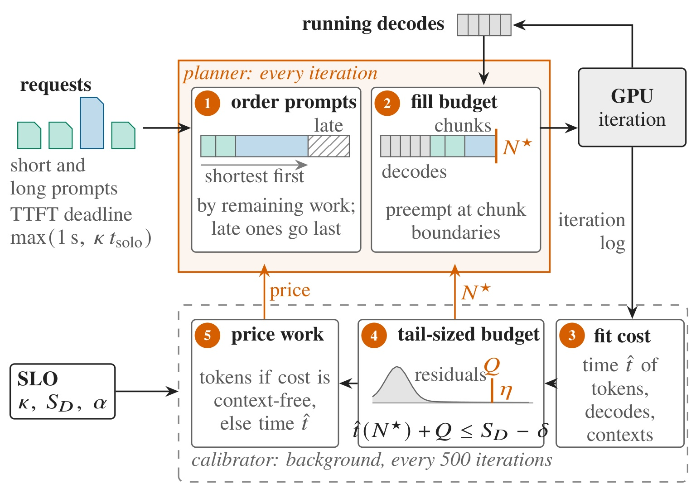
Figure 4上半部分橙色框是每轮规划，先根据剩余工作重排提示，再把解码和提示块放入预算，最后交给GPU执行；下半部分虚线框用GPU返回的迭代日志重新拟合成本、估计余量并选择工作量计价模式。反馈箭头说明余量不是一次离线profile得到的常数：余量改变预算，预算又改变本轮预填充与解码的组合，而不同组合产生不同预测误差。若始终套用另一种固定预算运行收集的残差，估计的尾部就不再对应当前策略。左侧SLO输入同时包含首token宽限倍数、解码间隔目标和校准达标目标，控制器据此确定要防到多深的尾部；上方运行中的解码请求不重新排成提示，而是每轮都会消耗一份预算。右下模型还会判断上下文成本是否显著，从而输出token或时间价格给提示排序。该结构的核心贡献是把线上观测与预算约束闭成一环，保留少量未用时间来吸收误差，而不是让预测器为了最大瞬时利用率把每轮填满。实现中批处理、KV分配、CUDA图和异步调度继续由引擎负责，规划异常可退回原调度器；因此这里的收益来自服务编排，也必须把后台拟合滞后和回退路径作为整体可靠性的一部分检查。若只替换队列而不记录GPU回报，图中这个预算与误差相互影响的反馈链条就无法建立，控制器也不能证明它留出的余量适配当前运行。
最大安全预算与目标残差超限率共同决定每轮可以放入多少预填充工作：
符号解释：$\widehat t(N)$是在较重参考负载下预算$N$的预测迭代时间，$Q$是残差余量，$\delta$预留token交付开销，$\alpha$是校准达标目标，$\beta=0.5$将一半失败预算分给TBT，$k$是允许的迟到间隔数，$\bar o$是平均输出长度。聚合实验使用$k=0$，让同一个余量同时支持P99与最坏间隔评分。$\alpha=0.99$不能替代goodput使用的90%请求达标门槛。对于平均三百token输出，校准需要防御远低于单纯百分之一的迭代超时率；留出普通P99残差往往仍不够深。
符号解释：$J$是一个请求经历的晚迭代数量。第一步用Markov不等式，因此不要求步骤独立；第二步要求该请求真正经历的迭代超时率受$\eta$控制。这是重要条件：校准器按迭代统计，而大批量迭代使更多请求暴露，若尾事件集中在大批次上，请求看到的超时率可能高于全局迭代率。作者附录明确提出这一点，实验与该条件一致并不是其在任意负载下成立的证明。无法被最小预算吸收的极端停顿另作份额统计，控制器不会为消灭不可消灭的停顿无限压缩预填充；预算降到最小仍不可行时，应报告时限不可满足。
2.2 最短优先与成本模式
尾部余量牺牲了每轮可做的预填充，因此需要用队列顺序回收首token表现。VelServe优先服务剩余未缓存工作最少的提示，短请求可在块边界抢占较长的预填充，其KV仍留在GPU。已经连空闲单独执行也来不及的请求移到可行请求之后，并非直接丢弃。首token截止时间随提示独立预填充时间增加，使长提示通常拥有更大绝对宽限；这为短请求插队提供条件，但不能保证过载下长提示永不超时。
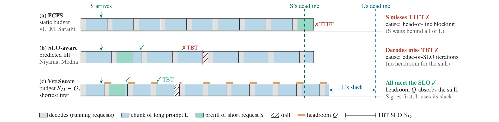
Figure 5是论文原始调度示意而非测量结果，三行面对同一个短请求到达、长提示尚未处理完和一次主机停顿。第一行固定预算的先来先服务使短请求等待长提示的所有块，虽然解码可能准时，短请求仍错过首token截止线。第二行立即插入短请求，却把每个迭代规划到时限边缘，遇到灰色斜线表示的主机停顿时便让整批解码超时。第三行在每轮上方保留橙色余量，主机停顿可落入该余量，同时短提示在块边界抢占，长提示用掉较多但仍够用的宽限后完成。图中的短、长截止线并非相同绝对时刻，关键前提正是按提示长度放宽首token时限。底部图例区分运行中的解码、长提示块、短提示、停顿与余量，读图时不应把橙色未用时段当作新增计算。图内关于原因的英文短语属于原图说明，裁图没有混入页面正文。该例只展示一个可以成功安排的时序，真实流量中短任务持续占满容量时，长提示仍会被延迟，因而论文后面还需按长度分组测量超时与完整SLO，而不能由示意图直接推出公平性。图中的抢占只在预填充块边界发生，既不回滚已经完成的计算，也不移动模型权重；这使顺序策略的额外代价主要表现为等待和KV占用。
理论上的最短剩余工作最优性以迭代成本对token线性、与上下文无关、解码批量轨迹固定为条件。在真实系统中，提示先后顺序还会改变何时进入解码，进而改变批量；所以证明只解释机制，完整系统仍靠实验评估。对于上下文近似无关的模型，解码可以换算为一定数量的预填充token：
符号解释：$w$是每个解码请求相对预填充token的成本。只有$w=1$时，不区分工作类型的普通token预算才在所有批量下精确；当$g>0$时，连上下文无关的加权预算也不足。实现在线检查上下文膨胀因子和解码权重偏差，满足条件时用计数，否则用拟合时间计算每个提示剩余工作并二分可放入的预填充量。V4的压缩注意力虽然成本平坦，实测仍经常需要加权；GQA与MLA通常走时间模式。启用前缀缓存时，排序按未缓存后缀而非整个提示长度，否则共享文档后的短跟进会被错判为长任务。
2.3 分离部署的同步接纳门控
预填充与解码分离后，不需要再从解码轮次里剔除预填充块，却仍可能在接纳已完成预填充、KV已到达的新请求时发生慢join。本文的专家并行rank同步推进，一个rank上的接纳停顿会拖慢其他rank的所有流；join在该部署中约一百八十毫秒，已经超过一百五十毫秒目标。门控不能让join计算变快，只能把多个待接纳请求集中在同一窗口，并跨rank对齐，以减少每条长回答经历的慢步骤。
符号解释：$n$为近期已完成请求的输出token数，$k(n)$按论文分位数约定给出允许迟到间隔数，$t_d$是解码步时长，$T$是接纳周期。对六百token回答，允许约六次慢间隔。周期取近期完成请求的统计量，不预测未来输出长度；随后向上取整到二的幂网格，让rank即使估计略有不同也能对齐。实测周期约四秒，KV已到达的请求等待下一epoch，会消耗首token宽限。若某请求无法等到下一epoch，就提前开紧急窗口，其他rank的准备请求共同加入。紧急开启用部分TBT余量换首token，因此聚合部署中前述Markov界限不能直接移植到这里。当join成本本身已小于目标，门应保持打开，不应为一个不存在的慢步骤强加等待。
3. 实验结果
3.1 三类注意力下的服务容量
聚合部署使用单张H100 NVL九十四GB显存、四百瓦上限，统一vLLM构建与CUDA图设置。Qwen3-8B、DeepSeek-V2-Lite使用真实权重；完整DeepSeek-V4-Flash无法放入单卡，作者每层保留二百五十六个专家中的六十四个并切片router，使每卡专家计算和流量接近四路专家并行切片，输出长度预先固定，不能用该设置讨论生成质量。Mixed流量以Poisson到达，提示长度百分之七十五在一百二十八至两千token，百分之二十为八千至三万二，百分之五为六万四至十二万，输出六十四至五百一十二。每档九十秒预热后记录一百二十秒到达窗口，通常两个seed，V4主对比三个seed。
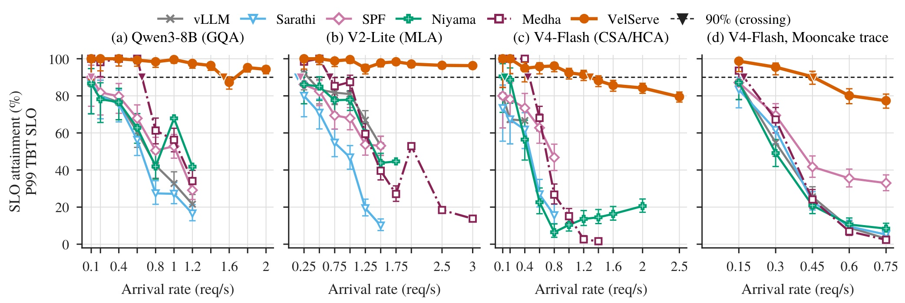
Figure 7横轴是请求到达率，纵轴是同时满足首token与每请求P99间隔目标的请求比例，虚线是定义服务容量的百分之九十交点。前三列分别是三类注意力模型上的Mixed负载，第四列是V4的真实Mooncake时间回放，所有曲线应在自己的列中比较。VelServe在较高请求率仍维持目标，而Medha通常是最强基线，其他系统更早因首token或解码间隔跌破门槛。误差条是汇总请求的Wilson区间，不等同于对seed间变化做充分估计。各列横轴量程和工作量不同，V4切片也不同于完整模型，因此不能横向用每秒请求数评判模型总体效率。作者从离散测量点插值估计首次跌破百分之九十的到达率，若最高测试点仍未跌破则仅给容量下界。窗口内所有到达请求都计分，失败或三百秒超时也算不达标，而不是只保留已完成请求。对于服务评估，这种分母比只看成功输出的延迟更能防止“把难请求留在队列里就显得很快”的假象。
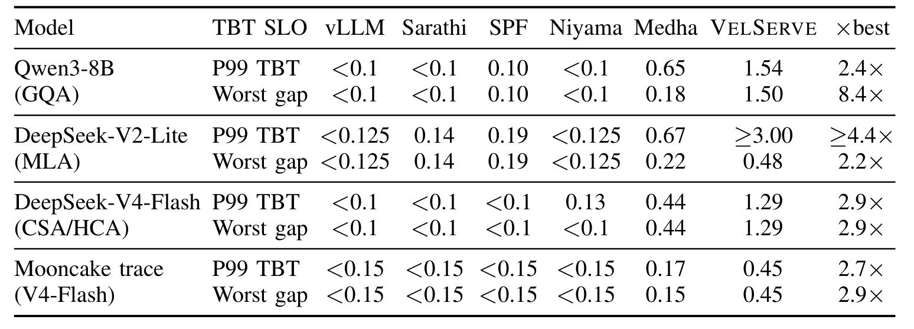
Table D.1补全Figure 7的精确交点，行分为Qwen3、V2、V4和Mooncake回放，每组又分每请求P99与最坏单次间隔两种标准。P99目标下Qwen3的VelServe容量为每秒1.54请求，Medha为0.65，约二点四倍；V4分别为1.29与0.44，约二点九倍；V2在最高每秒三请求仍达标，所以相对0.67的至少四点四倍只是下界。Mooncake回放为0.45对0.17，约二点七倍。若改为所有间隔都必须合格，Qwen3仍有1.50，而Medha降至0.18，倍数扩大到八点四；V2的VelServe反而从至少三降到0.48，相对基线只有二点二倍。这个变化说明宽松分位数与最坏间隔约束对不同模型有实质差别，不能从摘要的一组倍数推导所有目标下表现一致。表中的小于号表示最低负载就未过线，大于等于号表示没有测到失效点，不是精确测得的容量。此处提升的是满足特定服务定义的请求承载率，并非模型算子吞吐或token生成速率统一提升相同倍数。同一个系统在两种评分下的明显变化，正是要保留原始间隔日志的理由；仅保存请求平均速度无法重建这组比较。
3.2 余量校准与组合消融
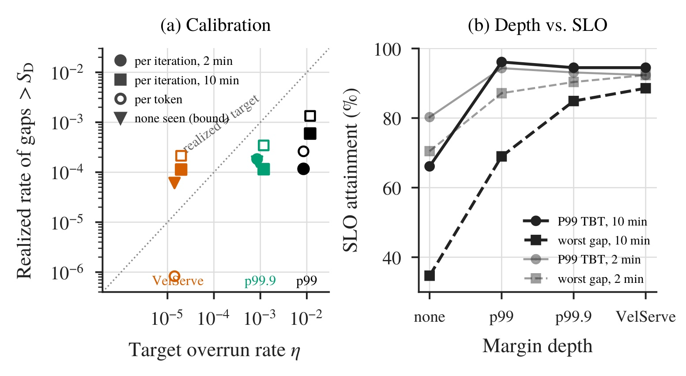
Figure 6左侧横轴是允许的目标超限率，纵轴是实测晚间隔比例，两者均为对数尺度；对角虚线表示实际与目标一致，点在其下方才是保守的一侧。实心和空心符号区分按迭代或按token计量，三角形表示观察期间没有超限、只能给上界，不能把它画成真实零概率。右侧比较无余量、P99、P99.9与VelServe更深余量，在两分钟和十分钟窗口上分别按请求P99或最坏间隔评分。P99余量在这个V4设置下已经能满足P99评分，但更严格的最坏间隔仍需要更深保护，因此自动校准的贡献是按目标选择防御深度，而不是证明只有一种固定百分位有用。较长窗口能够暴露短运行中没有出现的罕见停顿，也提醒尾部估计需要足够样本。左图按token的空心点还与理论的暴露率条件相呼应：同一次晚迭代影响的请求数不同，按迭代统计的好看结果仍应再按流实际暴露核验。这些结果依赖当前模型和运行时的停顿尾部，不能直接将横轴上的目标超限率换算成另一台机器应保留多少毫秒。
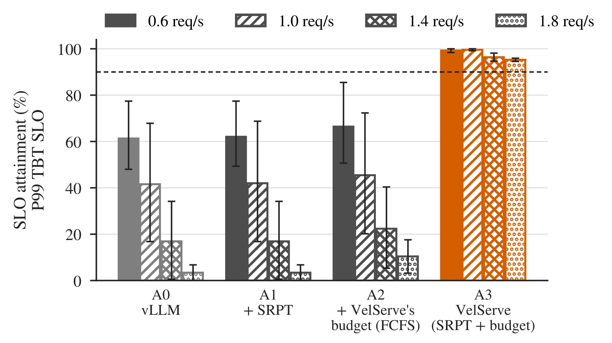
Figure 9将vLLM作为起点，依次只加最短剩余工作排序、只加VelServe预算但保持先来先服务，以及同时加入两者。横轴四组是调度结构，柱形填充区分每秒零点六至一点八的四档请求率，纵轴仍是联合SLO达标率，误差条为两个seed范围。只改排序几乎不动原系统表现，因为大预算下每次迭代仍然可能很慢；只改预算能够限制解码间隔，但短提示还会被长提示堵住，因此中低负载也无法稳定达到百分之九十。只有两者结合的橙色柱跨过目标，并在这些负载上维持较高达标。这里的消融识别的是机制互补，而不是给两项收益各分配一个可以相加的百分比。短任务优先本身不是论文原创，适配尾部余量后恢复首token表现才是其在该系统中的作用。图中最高档仍有限seed和有限到达窗口，不能解释为任何强度的突发流量都能被调度吸收，超过物理计算能力后仍需要容量管理与超时策略。
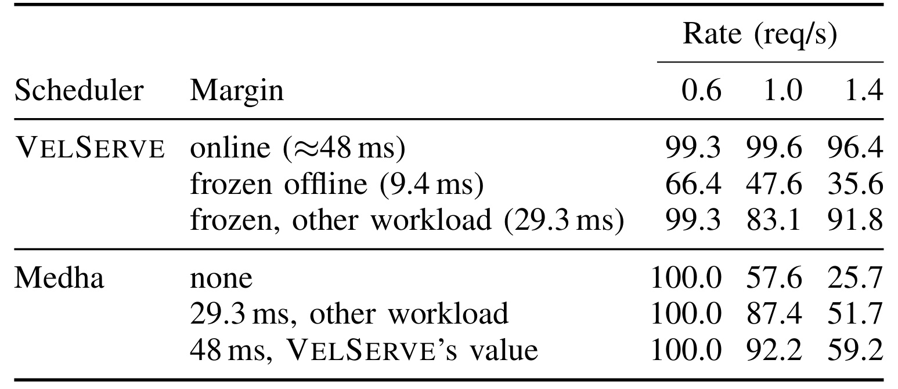
Table III把Qwen3的在线校准、离线冻结和其他负载迁移来的余量放在相同队列与预算规则下比较。每秒一点零请求时，在线约四十八毫秒余量达到99.6%，离线九点四毫秒只有47.6%，从Mooncake形状迁移来的二十九点三毫秒为83.1%；在一点四请求时分别为96.4%、35.6%和91.8%。这说明常规运行得到的浅尾部或另一负载的残差，不能普遍替代当前策略的真实观测。下半部分给Medha加入同样余量后改善解码失误，但在一点四请求仍只有59.2%，落后完整系统，说明队列顺序造成的首token损失仍在。表格并没有证明所有模型都必须不断更新余量：作者附录对V4的补测显示，一个手工调好的固定余量也能匹配VelServe，自动选择余量才是那里的价值。在线控制优势取决于残差是否随当前策略和工作量改变，不能把一列结果推广为任何静态预算都无效。实际复现还应记录校准起点、样本量与参考负载，区分冷启动估计不足和稳态分布变化。
3.3 服务目标与长提示的边界
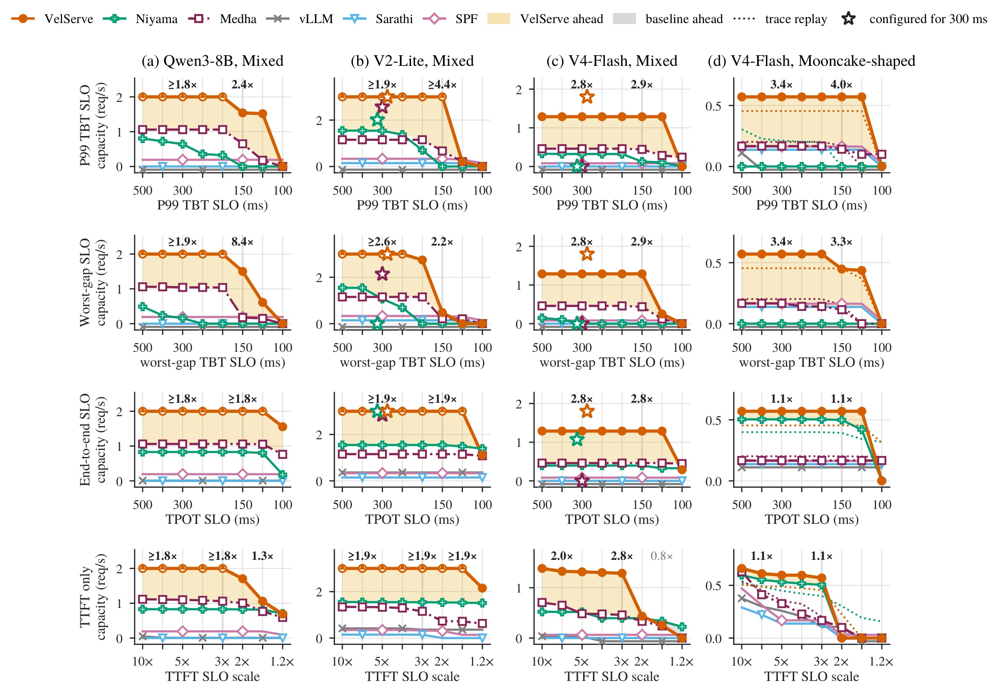
Figure 8是原文单个四行四列复合图，四列对应模型与负载，四行分别改变每请求P99间隔、最坏间隔、端到端TPOT目标以及只看首token时限。多数曲线来自同一批按一百五十毫秒、三倍首token宽限配置的日志重新评分，星号才标出重新按三百毫秒配置的运行，不能把每个点都写成专门重新调参后的最优结果。前两行显示在一百五十毫秒及以上目标时VelServe普遍领先，到一百毫秒时逐渐接近主机停顿本身的长度而不可行。第四行将首token宽限缩到一点二倍时，V4一列标出相对最好基线零点八倍，说明过紧首token目标会让预留尾部余量的代价反超优势。第三行的端到端评分也不能直接替代流式体验，因为平均输出速率允许中间停顿被其他快步骤抵消。该图支持“收益受服务合同定义影响”这一判断：需要先选择真实用户所需的约束，再比较承载率，不能先挑论文最高倍数，然后换成自己习惯的平均延迟指标解释。
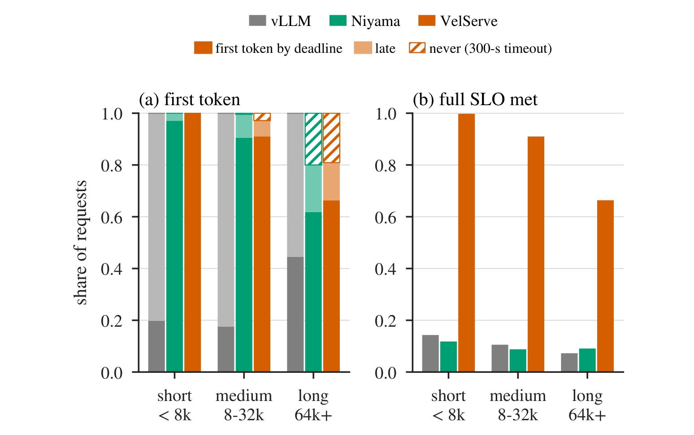
Figure 10将Qwen3在每秒一点零请求、四十分钟相同到达序列下的结果按短于八千、中等八千至三万二、长于六万四三类拆开。左侧统计首token是否准时，实色、浅色与斜线分别是准时、迟到和三百秒仍未获得首token；右侧要求两项SLO同时成立。VelServe和Niyama在左侧各长度类较接近，而右侧只有VelServe在每类服务了大部分请求，说明差距主要来自解码停顿。长提示橙色联合成功比例仍只有约三分之二，图中也保留了长请求超时，不应改写成“最短优先无饥饿”。其合理解释是在所测试负载下，没有通过完全牺牲长提示来换取短提示的总体高分，但持续高短任务负载超过宽限允许范围后，长请求仍会失败。首token图与完整SLO图的分离很有价值：只看一项就可能误判公平性或调度效果。生产测量还应进一步加入用户级、租户级和输出长度分组，本图仅按提示长度拆分，并没有提供这些额外保障。
论文还测试多轮与共享长前缀的Agent trace，缓存感知版本按未缓存后缀估价，直到饱和前可维持跟进轮次P99首token约一点五秒。该扩展说明“剩余工作”应随缓存命中改变，但不能将某个共享文档设置的数字直接用于所有长上下文RAG服务。规划本身在V4中位耗时约零点零一毫秒，相对十点六毫秒迭代较小；百分位开销与后台拟合也要单独观察，不能只用中位数说明永远没有调度器成本。
3.4 预填充解码分离的提升与绝对缺口
分离部署在一个节点的八张RTX PRO 6000上运行完整V4模型，四张做预填充、四张做解码，使用相同预填充配置和Mooncake请求。与前面的单H100模型切片、Poisson合成长度实验不同，这里所有系统在测试负载都低于百分之九十联合达标，因此比较的是固定负载下达标比例，而不是定义过线后的goodput容量。跨两种部署转述摘要倍数时尤其需要保留这一变化。
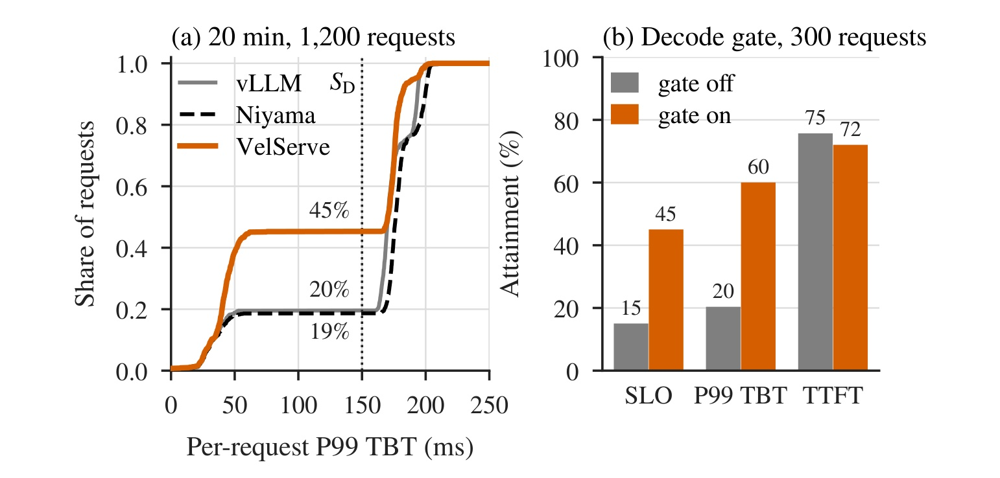
Figure 11左侧是二十分钟一千二百请求的每请求P99间隔累计分布，三条曲线在约一百八十毫秒附近都有慢join造成的台阶；VelServe没有把这个台阶移到更短位置，而是让更多请求不再积累足够多join，使约百分之四十五请求满足TBT目标，基线约百分之十九至二十。右侧另取三百请求，保持相同服务器只切门控，联合达标从约百分之十五增到四十五，TBT从二十到六十，首token反而从七十五降到七十二。这一配对消融支持通过稀释接纳次数改善连续输出的解释，同时直接展示它用部分首token宽限换来收益。两面板不是同一批请求，右侧单次窗口也没有运行间方差，不能把其柱形与左侧主结果拼成一条精确分解。对长回答而言，减少join次数可以降低自身P99；对短提示而言等待下一epoch却可能更明显。门控适用的前提是join确实超过目标且具有可合并的同步成本，换一个引擎或网络拓扑未必仍有相同慢步骤。
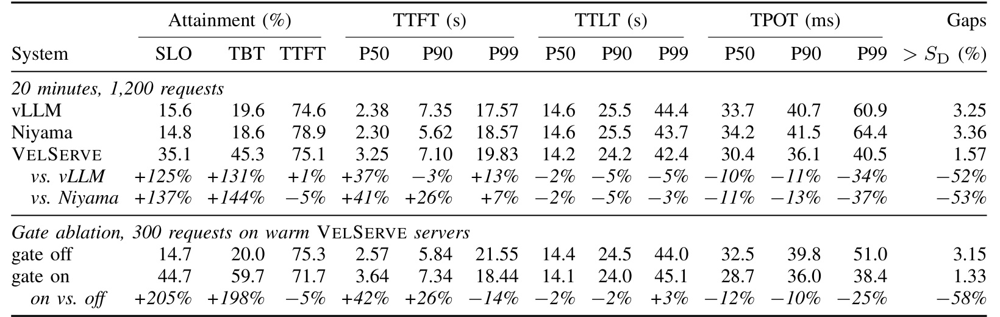
Table K.1上半部给出主窗口精确值，VelServe联合达标35.1%，vLLM15.6%、Niyama14.8%；TBT达标45.3%，首token达标75.1%，因此“超过两倍请求达标”并不表示系统已经满足百分之九十容量标准。对vLLM，VelServe的首token中位数从2.38秒变为3.25秒，P99从17.57秒变为19.83秒，不能将收益描述为所有延迟分位数改善。其TPOT和超过目标的间隔份额下降，则与减少接纳停顿的机制一致。下半部独立门控窗口中，联合达标14.7%到44.7%，首token达标75.3%到71.7%，TTFT中位数从2.57秒增到3.64秒；同时端到端P99完成时间从44.0秒到45.1秒略增。这些负向读数不应被“总体提升三倍”抹掉。表中延迟分位数基于完成请求，而联合成功分母是全部到达请求，两个统计集合不同；工程验收必须同时保留超时与失败，才能判断门控是在真实改善服务，还是仅让某一部分请求等得更久。该结果仅覆盖单节点、单模型、四比四分工和一个trace，不支持宣称所有分离部署都可复制相同比例。因此门控的上线验收必须明确哪些用户更慢、哪些流更顺，而不能用联合成功比例单个均值覆盖所有交互体验。
4. 总结
4.1 我的判断
这篇工作最有说服力的部分是先将解码尾部问题具体落到共享迭代，再用Table II、组合消融和在线/冻结余量比较串起原因与效果。它没有声称发明最短任务优先，而是说明当预算为了保护每个流的尾间隔主动留白后，队列顺序必须配合，以免首token损失吞掉收益。对于压缩注意力模型，简单token计价在一定范围可用；对于GQA与MLA，必须保留上下文成本。把这三个层次拆清，比单看二点九倍或四点四倍更容易判断某个现有服务是否值得改造。
服务合同决定了什么叫提升。论文选择每个请求内部P99间隔与长度归一化首token联合约束，能揭示TPOT掩盖的停顿；但不同产品对一个长间隔、首token等待、输出长度和请求优先级的容忍不同。如果业务只消费最终答案，最坏间隔未必是主要目标；如果下游是实时语音或连续工具流水线，每一次间隔都可能重要。应先由用户体验决定约束，再在相同日志上重算各策略。分离部署提升的是当前固定负载下的成功比例，绝对值仍远低于容量门槛，这个缺口是结果的一部分。
4.2 局限与后续验证
第一，尾部统计有样本需求和追踪滞后。极端停顿突发改变时，最近窗口尚未积累足够事件，余量可能暂时不足；把不可吸收事件排除在可控余量之外也意味着系统必须显式报告不可行，而不是把所有问题都交给预算。第二，理论不需要步骤独立，却要求请求实际暴露的超限率受控；迭代统计、token统计和长短流看到的风险应分别复核。第三，单卡V4是专家切片，无法用其输出讨论质量，真实多卡通信与路由差异还需完整部署测量。第四，基线主要是同引擎复现，作者仅对部分官方artifact、一个seed做有限对照；没有逐迭代决策一致性证明，比较解释仍需保留实现口径。
第五，最短剩余工作在重负载下不能保证长提示不超时，长度归一化宽限只限制某些范围的代价；多租户优先级和用户公平性没有在本文建立完整保证。第六，分离门控只测一个节点、一个四比四分工，紧急窗口会打破聚合理论的概率界限，并付出首token与部分端到端尾延迟代价。发布代码与全量日志尚需确认，当前不将“将发布”写成已经开源可复现。
后续首先应在自己的服务保留逐请求、逐token时间戳与批次成员，验证超时是否集中到共同迭代；同时比较平均TPOT、每请求P99与最坏间隔，确定问题是否真实存在。其次在相同硬件与缓存设置上测量预填充、解码和上下文成本，记录校准窗口、冷启动余量与突发停顿，比较手工固定预算、在线余量和完整组合，避免给自动化复杂度无条件加分。第三，在PD分离环境单独测join持续时间、rank同步与KV到达时序，只有当join确实构成不可缩短的超时事件，才测试门控频率；报告完整到达分母、长短提示组、超时、首token及完成延迟。最后应核验作者发布版本和基线配置，扩展到多节点与不同分工，再决定是否进入生产试验。对于存在用户等级和租户配额的服务，还要把优先级约束显式纳入排序，观察短请求优势是否转化为特定用户群的长期损失。校准器不应仅输出一个预算值，还应记录余量样本覆盖、不可吸收停顿份额和回退次数，以便服务目标变化后重新审计。